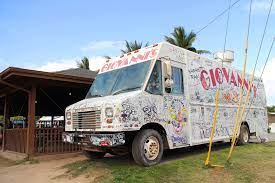
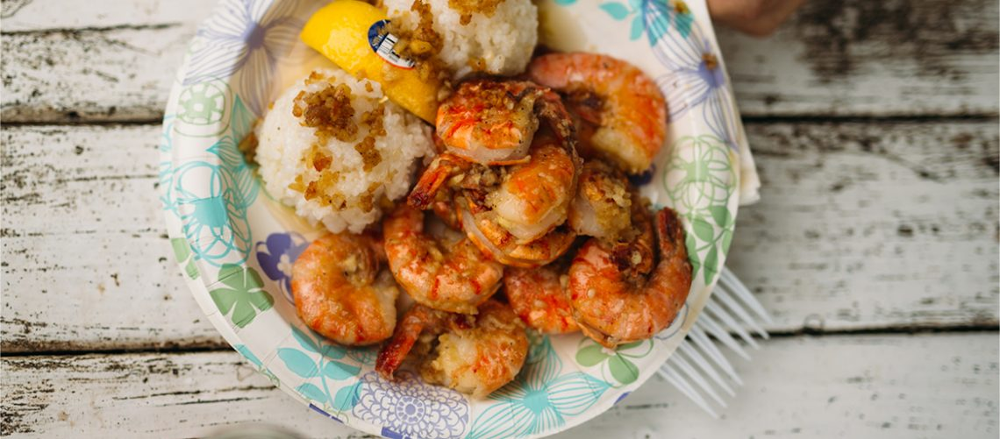

Food Trucks Hawaii has a vibrant food truck scene, offering a wide variety of cuisines in a casual setting. From Hawaiian fusion dishes to global flavors, food trucks are a great way to sample different types of cuisine while enjoying the island vibes. Fresh Seafood With its abundance of pristine waters, Hawaii offers an array of fresh seafood options. Besides the popular tuna and salmon used in poke, you'll find other local favorites like ono (wahoo), opah, mahi-mahi, and moi (Pacific threadfish). Asian Influences Hawaii's diverse population, which includes a large Asian community, has influenced its food culture. Japanese, Chinese, Filipino, and Korean culinary traditions have melded with local ingredients to create unique dishes. You'll find sushi, sashimi, noodles, dim sum, and various Asian-inspired flavors throughout the islands.
 